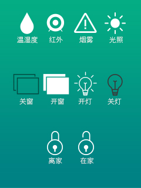
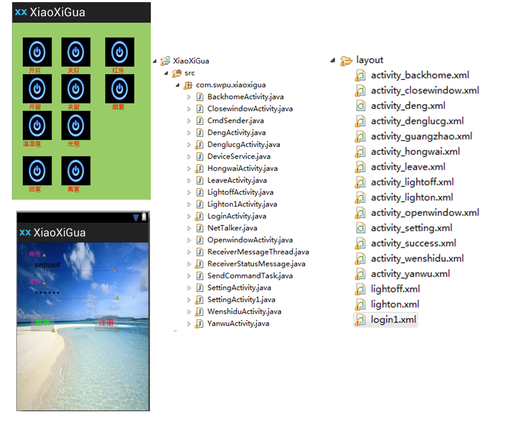

WebAPP
SmartHome*
*Express、Mongoose、Socket、Bootstrap ...实现：
- web前端、数据可视化
- 服务器后端
- 数据库
- 与硬件的连通


如何让数据说话？


基础架构...
服务器：Node.JS 数据库：MongoDB
数据库：MongoDB 与STM-32通信：Socket
与STM-32通信：Socket

STM32 模块

WIFI模块
思路设计
在app与底层硬件形成一个通信通道
功能实现
通过stm32板上的串口，进行数据接收、发送、处理

页面设计:
- 开机画面
- 控制主界面
- 数据显示界面
功能实现:
- 控制函数
- 采集处理函数
Android APP
- 页面布局
- 页面跳转
- 指令封装
- 消息处理函数
- 用户登录
- Socket通信

硬件部分
定义控制事件，根据传感器类型不同，分别定义事件簇号；根据簇号来选择控制不同的传感器
- 烟雾传感器
- 温湿度传感器
- 红外传感器
- 光敏传感器
- 步进电机
- 继电器